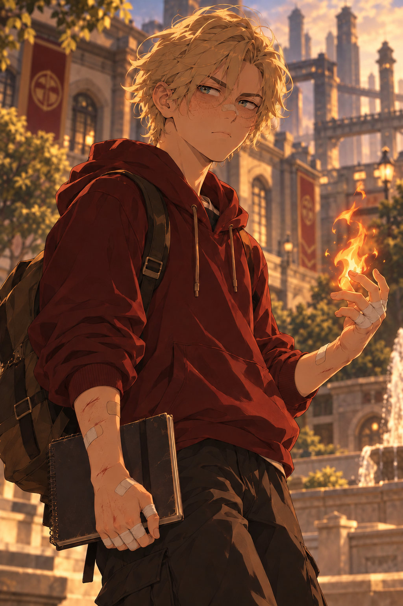

Sixteen · Kindlecraft
Retton
Reserved at first, playful and sarcastic with trusted people. Creative, competitive, and anxious about belonging.
- Age
- 16
- Power
- Kindlecraft (heatcraft). Former prodigy rebuilding reliability and fundamentals.
- Likes
- Programming pattern engines, experiments, inventing games, friendly competition, and learning through practice.
- Dislikes
- Repetitive tasks, harsh criticism, feeling excluded, and being treated as incapable.
- Goal
- To belong, be valued, and find meaningful work without helping harm others.
- Blind spot
- Fear of losing Gray makes him trust Gray’s judgment above his own.
- Relationships
- Gray is his mentor and chosen older brother. Tarin is an old friend who shares his projects and offers room to disagree. His parents were present but emotionally inattentive. Veyla is the girl who shares his non-magic classes and Tarin’s younger sister.
- Everyday habits
- Teases and talks freely when comfortable; becomes quieter when hurt. Can lose interest in routine but become absorbed in a project.